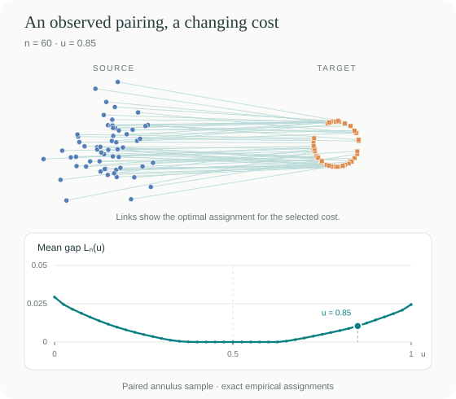
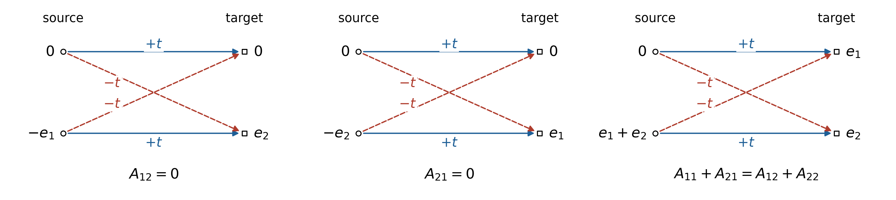
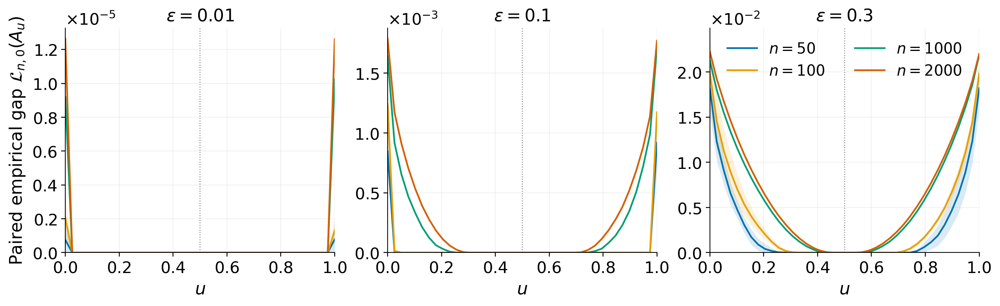
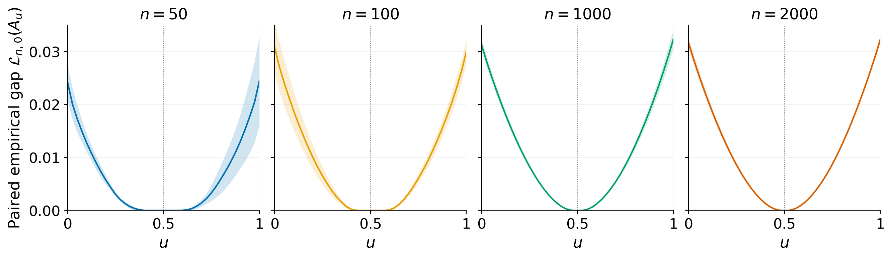
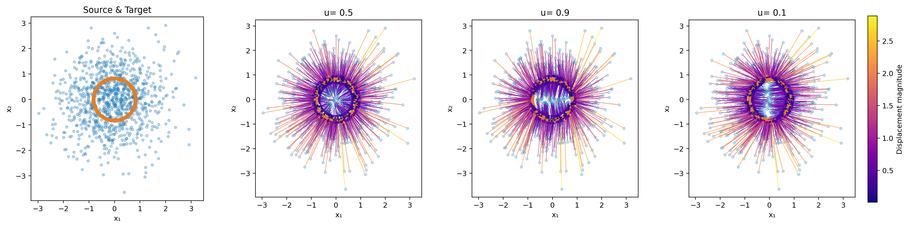

A research companion
Second-order geometry of optimal transport.
Cost identifiability and stability
Can an optimal coupling reveal the cost behind it? Explore the gap between an observed pairing and the best pairing for a candidate cost.
Exact assignments · Reproducible figures · Python notebooks

01 / Explore
One observation.
Many candidate costs.
The demo solves an exact assignment problem as you move through the cost family A(u) = diag(u, 1 − u). See which costs preserve the observed pairing and where the gap becomes positive.
Launch the browser experimentRuns in your browser. No installation or data upload.
- 01
Choose a transport
Start with a convex cosine perturbation of a Gaussian, or a radial map from a Gaussian to an annulus.
- 02
Compare how the pairs are observed
Sample from the true transport plan, or match two independent marginal samples. The finite-sample gaps can look very different.
- 03
Read the gap at its natural scale
Vary the point count and perturbation, inspect zero plateaus, and optionally divide the cosine loss by δ².
02 / Reproduce
The figures, with their code.
Four article figures, committed raw data, and vector PDF exports. The figure guide records the equations, seeds, grids and repetitions.

Figure 5.1 / Discrete geometry
What a support cycle tells us
Feasible exchanges reveal linear constraints on a compatible cost matrix.

Figure 5.2 / Cosine perturbations
A small perturbation, a small signal
How perturbation strength and sample size change the paired empirical gap.

Figure 5.3 / A radial transport
Identifiability meets finite samples
A nonlinear radial map produces visible cost dependence, with finite-sample zero plateaus.

Figure 5.4 / Empirical assignments
Same points, different pairings
Two independent clouds, three candidate costs. All 1000 assignment arrows are colored by Euclidean displacement on a shared scale.
03 / Go further
Continue in
the notebooks.
Change the models, compare sampling schemes, or inspect the exact arrays behind the article figures. Each notebook offers a different entry point.
Explore the repositoryFrom data to figures
Re-render without
the long computation.
The repository includes the evaluated losses and assignment permutations. Render all four figures from those data, or use the full instructions to recompute the experiments.
Python 3.12 is the recorded environment. The website itself needs no Python installation.
git clone https://github.com/gpeyre/iot-curvature.git
cd iot-curvature
python -m venv .venv
source .venv/bin/activate
python -m pip install -r requirements-lock.txt
python -m pip install -e .
python figures/reproduce.py --render-onlyThe accompanying research
Second-order geometry of optimal transport: cost identifiability and stability
Optimal transport finds a coupling for a given cost. The inverse question asks which costs explain an observed coupling. The paper connects the second variation of the transport value with cost identifiability and quantitative stability. For bilinear costs, identifiability is considered up to positive scale.
Citation details